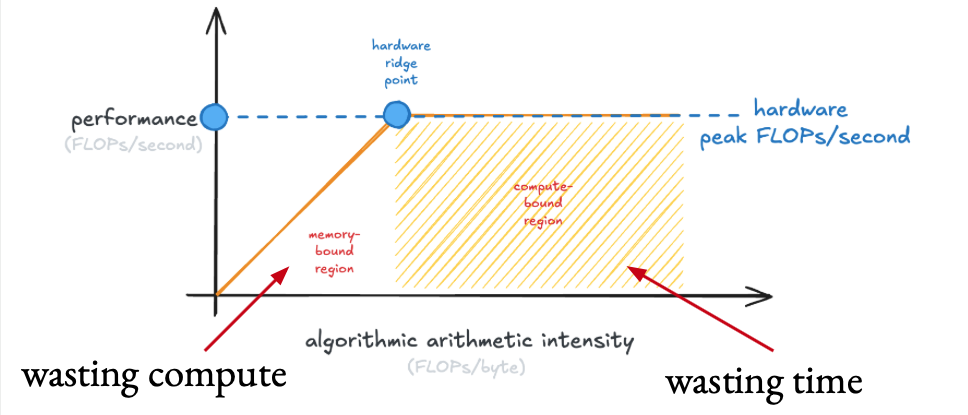
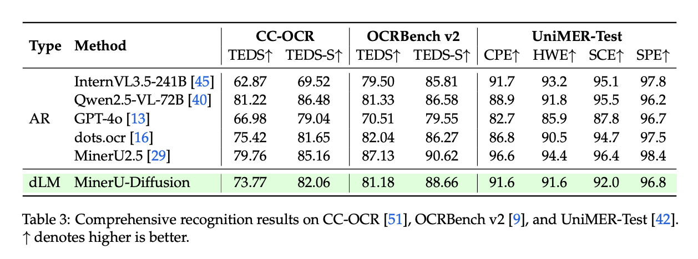

inference
Don't Diffuse, Speculate
Diffusion and speculative decoding both trade breadth for depth. In most circumstances, speculative decoding is the better way to make that trade!
I am currently in the middle of writing a long tutorial on speculative decoding. As a result, I’ve spent a lot of time thinking about various inference trade-offs: latency, throughput, quality, total sequence FLOPs, etc.
I now believe that you probably don’t want to use diffusion language models. Except for the most latency sensitive (and cost insensitive) cases, you might just want good speculative decoding.
Diffusion and speculative decoding are both ways of trading off breadth (many concurrent chats generating one token at a time) for depth (many tokens generated at once per sequence). My core contention is that speculative decoding is a better way to make this trade-off in most circumstances.
Not least because speculative decoding results in no loss of quality!
Diffusion v. Speculation?
Standard language modeling is autoregressive. This means that you generate one token per forward pass until you hit some stopping point.
If you think about the roofline model, you’re moving around a lot of memory (all of your model weights) for a relatively small amount of compute when you’re just generating one token. This means that you’re wasting compute!

The goal of inference is to not waste compute. Doing that requires running more tokens per forward pass. In the easiest case, this just means batching. If you can generate 1 token for 300 chats at once, you’re going to be wasting much less compute than generating 1 token for 1 chat.
However, there are two classes of techniques that allow you to reduce the number of forward passes instead. I.e., you can generate 10 tokens at a time for 30 sequences at once:
- speculative decoding, where you get some draft tokens (from, e.g., a small model) and use your big model to verify those draft tokens in parallel. This results in lossless generations.
- block diffusion, where your big model generates a block of tokens in parallel, typically over the course of a few passes.
For diffusion, you might be generating 32 tokens in a single block, and then take more passes to refine the tokens in that block. So, if you were generating 32 tokens per block, with 2 passes per block, you’d need 1/16th the forward passes of an autoregressive model.
Low-latency generation, and you’re not wasting compute! Sounds great, right?
Diffusion Doesn’t Work (Yet)
However, there are three major caveats.
- Diffusion models tend to be worse than autoregressive models.
- Diffusion and speculative decoding trade off breadth for depth, but they’re not actually free lunches. You’re losing the ability to run many sequences concurrently (throughput) for the ability to run a few sequences quickly (latency).
- Speculative decoding gives you better control over that trade-off!
Quality Loss
First, current diffusion models tend to be worse than size- and FLOPS-matched autoregressive models. Speculative decoding results in no loss in quality relative to the autoregressive base model, but diffusion doesn’t have any such guarantees!
Consider MinerU diffusion as an example (I’m a documents-focused person after all). MinerU-Diffusion underperforms MinerU2.5 pretty substantially across benchmarks, in spite of being twice as large:

There are some cases where you are really latency sensitive and are willing to make that trade-off. But you can still get substantial speedups with speculative decoding! dFlash gets 5x speedups at various model sizes, for instance.
Trading Breadth for Depth
Both speculative decoding and diffusion are a way of trading throughput (breadth) for low latency (depth). Instead of making 1 token of progress on many sequences per forward pass, you make many tokens of progress on a smaller number of sequences per forward pass.
But does this save you any overall work?
As a minor thought experiment, consider the number of FLOPs involved in generating the same sequence with an autoregressive model, a diffusion language model, and a speculative decoding model.
| Approach | Total FLOPs |
|---|---|
| Autoregressive | Model FLOPs × N |
| Diffusion (2 passes) | Model FLOPs × N × 2 |
| Speculative Decoding (perfect) | (Model FLOPs + Draft FLOPs) × N |
- The autoregressive model uses the lowest number of FLOPs.
- For diffusion, with 2 passes per block, you are performing twice as many floating point operations for the exact same sequence.
- For speculative decoding, even with 100% acceptance, you have to spend the autoregressive FLOPs + the drafting FLOPs.
But these approaches are fast in cases where you have wasted compute, i.e., low batch sizes. You can spend that excess compute to generate more tokens without slowing down the forward pass.
Controllability
Speculative decoding lets you control how you do that trade-off with more fine-grained techniques! For instance, vLLM allows you to turn off speculation altogether when you hit high batch sizes. dSpark (from DeepSeek) uses a confidence prediction and the current load on the system to speculate the best possible tokens on every forward pass. You can also just dynamically adjust the number of tokens you’re speculating.
All of these knobs are tunable without loss in quality, and in current software like vLLM.
Conversely, serving diffusion LLMs with the same controllability just… isn’t there yet.
Using Diffusion for Speculation
Fear not! If you’re a diffusion language model fan there is still a place where it’s currently very useful: using diffusion to speculate.
There are two approaches to use diffusion for speculation:
- The main example currently is dFlash or dSpark, where a small diffusion model is used to predict a block of speculative tokens using features from the target model. This model is much smaller than the target model, and can be trained on ~any autoregressive transformer.
- A more niche second approach, which I’ll refer to as “dual-view” models (example, Orthrus), where the model has both diffusion attention and autoregressive attention, and the diffusion part is used to speculate tokens, with the autoregressive part used to verify those tokens.
This (Probably) Won’t Age Well
I am confident that this will be wrong in a year or two! The smartest people I know (Koustava, Apoorv, and others!) are placing bets on diffusion getting better and paying off.
This is solely from current experience, where diffusion language models underperform autoregressive models by a wide margin. I think the underlying idea makes a lot of sense, and there are lots of latency-sensitive applications. But from a practical/product-focused perspective, I’m not sold just yet.
But one day I will look back and laugh at this post!